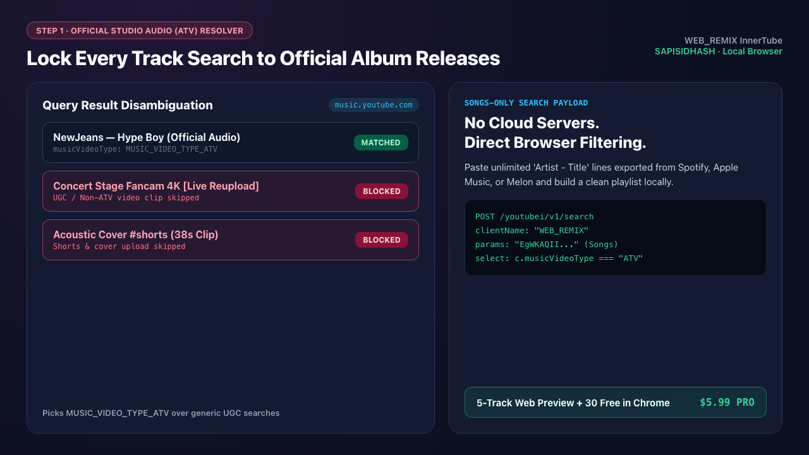
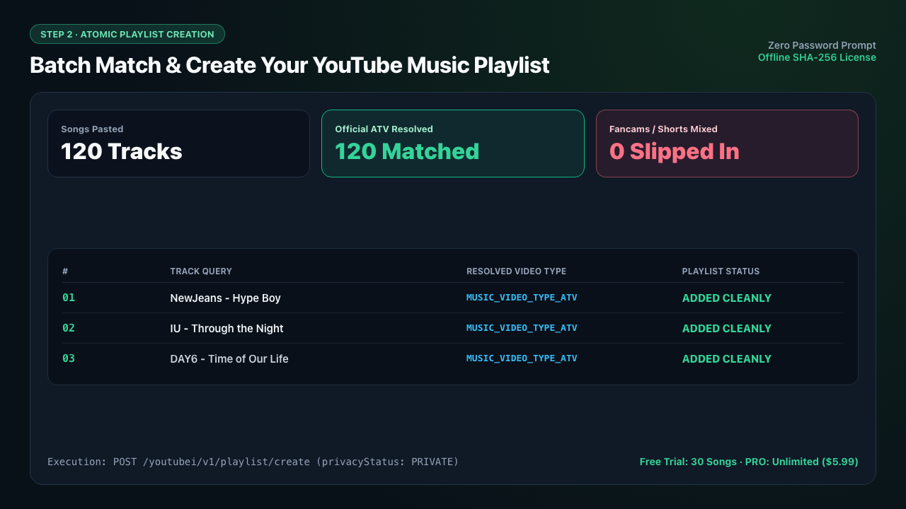

Stop Importing Fancams & Covers When Moving Playlists to YouTube Music
Generic playlist converters match raw video searches, filling your new YouTube Music playlists with crowd-noise concert fancams, amateur covers, 30-second Shorts, and sped-up lyric videos. Here is how client-side MUSIC_VIDEO_TYPE_ATV resolution imports clean studio album audio inside Chrome.
What Is PureTrackMatcher PRO?
PureTrackMatcher PRO is a local Chrome MV3 extension built by DH Labs ($5.99 one-time pass, 30-track free run inside Chrome + live 5-track browser preview simulator) that converts pasted Artist - Title song lists into clean private YouTube Music playlists: it dispatches POST /youtubei/v1/search via your browser's own SAPISIDHASH session with the WEB_REMIX Songs parameter, locks onto MUSIC_VIDEO_TYPE_ATV official studio album tracks while skipping fancams, live clips, covers, and Shorts, and executes POST /youtubei/v1/playlist/create with zero cloud password prompts.
1. Why Standard Search Converters Contaminate Music Queues
- Generic video results outrank official audio: Viral concert fancams, lyric loops, and TV show clips frequently match generic title queries before the clean studio album release.
- Cover uploads & 1-hour loops disrupt playback: Pasting 100 tracks into a plain importer routinely introduces acoustic covers or 60-minute slowed mixes that require manual cleanup later.
- Cloud converters ask for third-party API trust: Web portals request broad remote permissions over your Google account just to run search and playlist creation.

WEB_REMIX resolution locking onto MUSIC_VIDEO_TYPE_ATV official studio tracks while discarding non-ATV fan videos and Shorts clips.2. Direct Browser InnerTube Execution (`POST /youtubei/v1/search` + `/playlist/create`)
Instead of scraping HTML blindly, PureTrackMatcher invokes the same client-side WEB_REMIX InnerTube Songs search payload used natively by music.youtube.com. Each response node is scanned for musicVideoType === "MUSIC_VIDEO_TYPE_ATV" before assembling your private playlist locally.

| Capability | Generic Cloud Importer | PureTrackMatcher PRO ($5.99 One-Time) |
|---|---|---|
| Track Type Filtering | Selects top generic search hits (fancams, covers mixed) | Locks onto MUSIC_VIDEO_TYPE_ATV official studio audio |
| Credential & Session Security | Remote cloud OAuth tokens | 100% local Chrome MV3 via SAPISIDHASH |
| Pre-Install Verification | Account signup required upfront | Free 5-track live web preview + 30 tracks free in Chrome |
| License Model | Recurring monthly subscription | $5.99 one-time offline SHA-256 serial key |
3. Try 5 Tracks Live in Browser, Then Run 30 Free in Chrome
Before installing anything, test how noisy keywords (fancams, covers, live clips, 1-hour loops) get stripped inside our interactive 5-track web demo.
Every Chrome MV3 install lets you match and build playlists up to 30 real songs for free right on music.youtube.com, then enter your one-time PTM-PRO-... key ($5.99 on Gumroad) whenever you need unlimited playlist batches.
4. Frequently Asked Questions
Which music platforms can I import song lists from?
Any service where you can export or copy plain text in Artist - Title format (one track per line), including Spotify, Apple Music, Melon, Tidal, or spreadsheet archives.
How do I test PureTrackMatcher before paying?
Open the live browser filter simulator for 5 tracks with zero installation, or load the Chrome extension and match up to 30 real YouTube Music tracks free before entering your $5.99 PRO serial key.
Does PureTrackMatcher upload my Google password or listening history?
No. Manifest host permissions are scoped strictly to https://music.youtube.com/* and every search, track selection, and private playlist write happens locally inside Chrome.